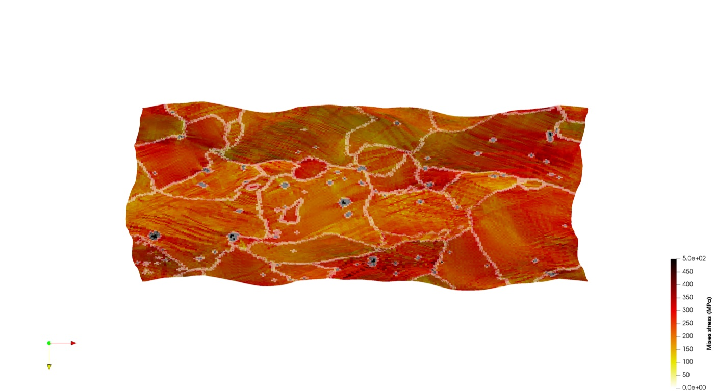
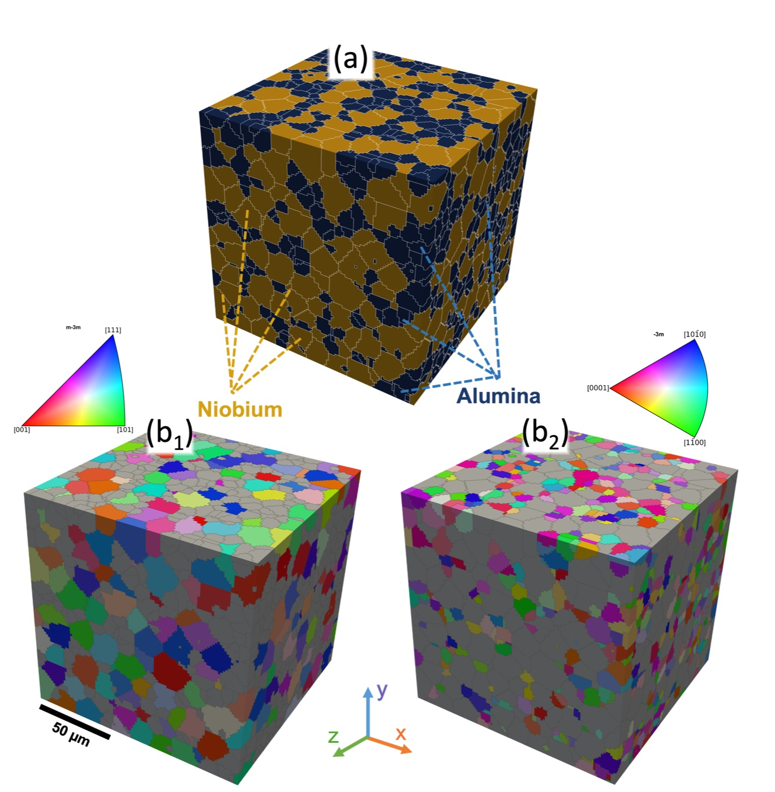

DAMASK Crystal Plasticity Documentation: Official Docs, Real Workflows, and Beginner Traps
When people search for DAMASK crystal plasticity documentation, they are usually not asking only for a URL. They are asking how to get from a clean example in the docs to a model that answers a real materials question: a measured EBSD map, an anisotropic stress-strain response, a suspicious local strain field, or a reviewer asking why the chosen constitutive law is defensible.
Short answer: the official DAMASK documentation is the right starting point, but it is not a complete research workflow. A serious DAMASK study needs documented microstructure preparation, constitutive-model choice, parameter origin, calibration logic, convergence checks, and validation against independent data.
Official docs: crystalplasticity.org/documentation.
My own work with DAMASK has moved through several versions of that problem: EBSD-informed aluminum alloy RVEs, dislocation-density based crystal plasticity, phase-resolved deformation in composites, in-situ SEM and EBSD registration, phase-field damage coupling, and recently a published LPBF AlSi10Mg study in Mechanics of Materials where DAMASK helped connect build orientation to local stress-strain partitioning. The lesson is consistent: the solver is powerful, but the model only becomes science when the workflow is auditable.
What the Official DAMASK Docs Do Well
The DAMASK documentation is good at what official documentation should do: explain installation, core concepts, input formats, command-line utilities, examples, and solver usage. It shows the grammar of the tool. If you are new to DAMASK, you should read the official material first rather than relying on copied input files from someone else.
Where beginners get stuck is not usually syntax. They can often make a model run after enough trial and error. The harder question is whether the model means what they think it means. Does the RVE represent the measured material? Does the constitutive law match the deformation mechanism? Are the parameters inherited from literature, calibrated, guessed, or overfit? Does the boundary condition match the experiment? These are not documentation gaps in the narrow software sense. They are research-design gaps.
Running is not validation. A DAMASK simulation that converges has passed a numerical gate. It has not passed a scientific gate until it predicts something you did not simply tune it to reproduce.
The Missing Layer Between Docs and Research
The missing layer is the project notebook: the reasoning record that sits between official documentation and your final paper. In my own work, this is where I write down what the model is allowed to claim, what it is not allowed to claim, and which checks must pass before the results can be used in a figure.
| Workflow layer | What beginners often document | What should be documented |
|---|---|---|
| Microstructure | One EBSD map image | Step size, cleanup, grain reconstruction, phase handling, 2D-to-3D assumption, representativeness |
| RVE | Grid size and number of grains | Why that size, grain-size distribution, texture match, phase fraction, convergence evidence |
| Constitutive law | Name of the model | Deformation mechanisms it captures, mechanisms it ignores, and why that is acceptable |
| Calibration | Final fitted parameters | Parameter origin, bounds, objective function, fitted data, validation data, sensitivity |
| Post-processing | Stress and strain screenshots | Scripted extraction, units, averaging rules, local-field metrics, uncertainty where possible |

EBSD-to-DAMASK Is Not a File Conversion
EBSD is often treated as the shortcut to a realistic model: measure a map, convert it, run DAMASK, publish a colorful field. That is not enough. EBSD gives orientations, phase labels, spatial resolution, and grain morphology in a measured section. A 3D crystal plasticity simulation needs a volume, phase-aware geometry, grain-resolved orientations, and a defensible statement about representativeness.
In the 2026 LPBF AlSi10Mg work with Muhammad Muteeb Butt and co-authors, the EBSD evidence did not simply decorate the paper. It drove a statistically representative 3D polycrystalline RVE generated with DREAM.3D, about 590 grains over a 100 x 50 x 100 micrometre volume, then simulated in DAMASK under periodic boundary conditions. The point was not to show that DAMASK can fit a tensile curve. The point was to test how build-orientation dependent microstructure and Si-rich cellular-network spacing affect local stress-strain partitioning.
That distinction matters. If the EBSD-to-RVE step is weak, every later stress-field map inherits that weakness. If it is documented well, the crystal plasticity result becomes a bridge between measured microstructure and mechanical response.

Calibration Is Where Most Models Become Weak
Calibration is not the act of making a curve line up with experimental data. Calibration is deciding which parameters are allowed to move, what physical meaning those parameters have, and which data are reserved to test the model after fitting. This is where many beginner DAMASK studies collapse under review.
In the LPBF AlSi10Mg study, two constitutive frameworks were compared: a phenomenological slip-based model and a dislocation-density-based physics model. Both were calibrated against experimental tensile data using a Bayesian optimization strategy with an objective function that combined stress-strain and hardening-rate errors. Importantly, the orientation effect was not handled by freely changing every parameter. Only one strength-related parameter varied by orientation, and it was connected to the effective Si-network spacing along the loading direction.
That is the kind of calibration story that readers can evaluate. The model has parameter economy. The fitted term has a microstructural interpretation. The comparison between formulations becomes meaningful rather than cosmetic.
Practical rule: before fitting, write one sentence for every adjustable parameter explaining what physical feature it represents and why your dataset can identify it. If you cannot write that sentence, the parameter probably should not be fitted.
What Publication-Grade Documentation Looks Like
A publication-grade DAMASK workflow should let another competent researcher understand what was done without reverse-engineering the folder. At minimum, document the following:
- Material system, processing route, and the mechanical question.
- EBSD or synthetic microstructure source, including cleanup and grain reconstruction.
- RVE dimensions, grain count, phase fraction, texture match, and convergence logic.
- Boundary conditions and loading path, including periodic assumptions where used.
- Constitutive law, slip systems, hardening law, and parameter sources.
- Calibration objective, fitted data, held-out validation data, and sensitivity checks.
- Post-processing scripts for stress, strain, activity, texture, or damage fields.
- Limitations, especially where sub-grain features are represented implicitly.
This is why I separate "DAMASK help" from "crystal plasticity consulting". DAMASK help gets the model running. Crystal plasticity consulting makes the model scientifically useful. If your work is at that stage, my crystal plasticity simulation service is the relevant route. If the bottleneck is measured microstructure data, start with EBSD and MTEX consulting.
Recent DAMASK Use Cases From My Work
The following are representative use cases I have worked through or am actively developing. I am listing them because they show how different DAMASK projects require different documentation standards:
| Use case | What DAMASK was used for | Documentation emphasis |
|---|---|---|
| LPBF AlSi10Mg anisotropy | Grain-resolved DAMASK simulations comparing phenomenological and dislocation-density formulations | EBSD-to-RVE construction, parameter economy, strength link to Si-network spacing |
| AA6082 temperature-dependent deformation | EBSD-informed crystal plasticity for texture evolution and deformation behavior | Measured texture, temperature-dependent response, validation against experiments |
| In-situ SEM and EBSD correlation | Connecting simulated local activity fields to observed slip traces and strain localization | Registration quality, local-field metrics, honest limits of correlation |
| Two-phase composite damage | Crystal plasticity fields coupled to phase-field damage interpretation | Phase contrast, interface regions, damage partitioning, image-to-model consistency |
| HCP dislocation and twinning models | Testing model mechanisms before scaling to broader materials claims | Mechanism verification first, publication claims later |
The shared pattern is that each project needs more than the official software docs. It needs a traceable scientific workflow: what was measured, what was assumed, what was fitted, what was validated, and what the result is allowed to mean.
For a deeper publication-focused checklist, read my guide on how to publish DAMASK crystal plasticity research in the International Journal of Plasticity. For the process side, the companion post on sheet metal forming simulation explains where crystal plasticity belongs inside a multiscale forming workflow.
Need a DAMASK Workflow Reviewed?
If your model runs but the calibration, EBSD conversion, or paper framing still feels fragile, I can review the workflow and identify the gates that need to pass before you build claims on it.
Book a 15-Minute Call See Crystal Plasticity ConsultingGet the next post by email
A few posts a month on research careers, simulation consulting, and building a life abroad. No spam, and you can unsubscribe with a single reply.
Prefer LinkedIn? Follow me there — every post is shared on LinkedIn.